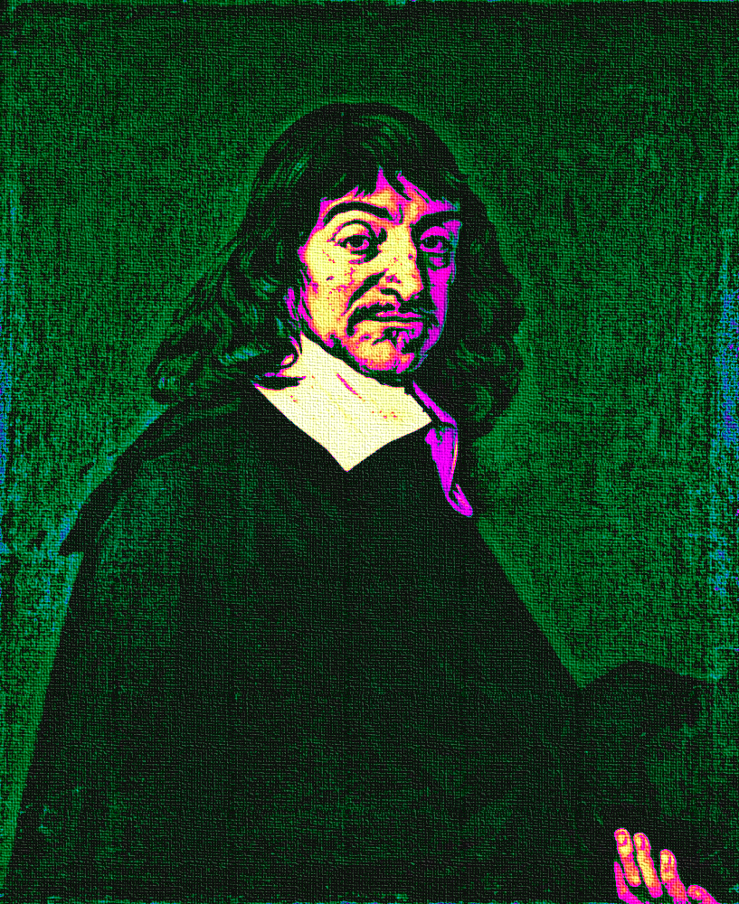
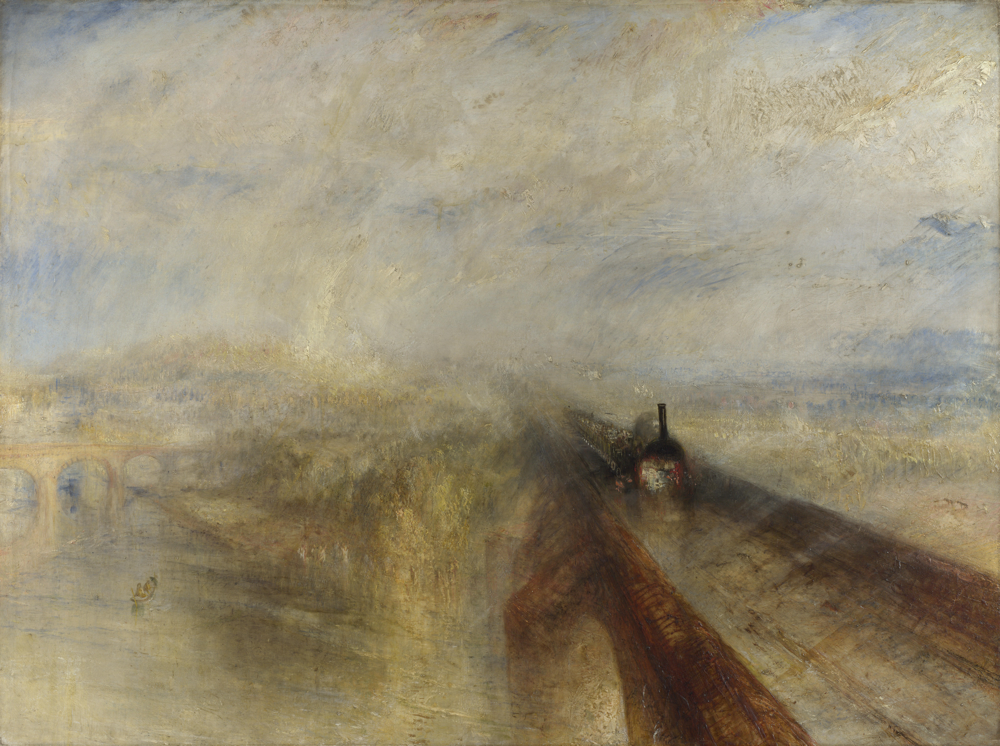

Overview
Overview
Course Structure
This course is an introduction to media theory – a subcategory of philosophy that emerged in the mid 20th century as an attempt to understand the impact that new technologies were having on the individual and, in a broader sense, society. The general tone used to convey the ideas contained throughout the notes and lectures will be an informal one, you refers to you the reader, listener and student. We refers to the teachers, authors and students that have been consulted in developing the material for this course. Us refers to the group that we happen to find ourselves in at any particular moment in time. And I refers to me, the teacher, Adam McCartney. This course is intended to introduce undergraduate level music students to the broader disciplines relevant for professional work in the arts and humanities. There are those who would consider it absurd that now, in the 21st century, investing in anything but a science related degree is simply a waste. In the face of such beliefs, it is worth pausing briefly to remember a simple point made by John Henry Newman, that a solid education in the liberal arts equips a student with tools that will ultimately lead them to become better engineers, scientists, doctors, artists, lawyers and etc.
Philosophy of Teaching
 The satisfaction that can be gained through learning, teaching and generally sharing information and can be immense. My more positive experiences over the years as a student and teacher have tended to come from courses, books, tutorials, videos, discussions that were clear enough to allow enable an understanding of the topic from first principles – that is to say that the material related to the topic was assembled in such a way as to reveal its most fundamental ideas. Its virtually always beneficial to ask rudimentary questions about whatever it is that we are trying to understand, as such questions will quickly reveal whether or not the topic under discussion has a basis in fact. This course also aims to introduce some of the core methods that are useful anywhere that it becomes necessary to think about something:
- Discourse
- Reason
- Logic
- Debate
- Reference
7 Liberal Arts of the medieval university
- Grammar
- Rhetoric
- Logic
- Geometry
- Arithmetic
- Music
- Astronomy
Where and how to access material
The primary source of information for topics presented in this course can be found in the VMI digital library, which is labelled Academic Resources For Students and will appear as a link on the homepage of your Moodle eLearning profile. Please take the time to do the readings, this will prepare you for the discussions that will take place during class. Thinking about things is a practical exercise, it‘s the same as riding a bicycle or learning to play an instrument. That means that the only way that you are going to learn how to think is by engaging with the readings and exercises. Much the same as any activity that is worth learning, thinking is difficult and takes a lot of patience to get right. The texts that were chosen to be part of the course are all written in an accessible style and are not overtly academic or technical. Nevertheless, they do contain ideas and arguments that you might not get on the first reading. My two favorite reading disciplines from when I was an undergraduate were the practice of reading for a pre-allocated amount of time and also reading each text at least three times in preparation for a class.
Portability and how to apply course content
Should you try and tell your piano tuner about Ludwig Wittgenstein‘s ideas on the formation of knowledge? Definitely not! In fact, they would be more likely to charge you extra fees just to get your piano tuned if you chose to do so. So where exactly can this knowledge be applied? A friend of mine is a hobby programmer and he recently told me his principle approach to work. He called it „eat your own dogfood“. Now obviously the idea of eating any kind of dogfood does not sound particularly appetizing, but it is worth considering that dogs can also eat cake. The simple idea here is that whatever type of idea or discipline you develop, it is better first practiced on yourself before inflicting it upon the rest of us; when properly cultivated a discipline is a way to nourish, develop and sustain.
The long 19th century (1789 - 1914)
A brief history of art leading up to the industrial revolution
The renaissance had shown that the rise of merchant classes was possible, and that there was room for a talented craftspeople to build a career out of a good reputation. Still, even the most talented artists from the renaissance and baroque periods were subjects of some royal court and often patronized (though less commonly so than in the middle ages and early renaissance) by the clergy. The dominant motives of these eras were, for instance, dedicated to the nobility and to the church. An appreciation for human ingenuity was growing and quietly, a new philosophy of reason and enlightenment was being born.
Art in the Age of Revolution (1789 - 1848)
Before it turned into a bloody mess, the core ideals of the French Revolution (freedom, equality and brotherhood) seemed to be an articulation of the broader hopes of humanity for a brighter future. Many of the artists of the late 18th and early 19th centuries echoed these newly formed ideas of the enlightenment.
- 50 years that included late Mozart, Haydn, Beethoven, Schubert, Goethe, Dickens, Dostoevsky, Verdi, Wagner, Mary Wollstonecraft, Mary Shelly
- Art made to appeal to a literate public that was increasing in size
- The invention of machinery reduced the cost of physical labor for many, meaning there was more free time for education and pastimes
- Aesthetic themes often contained pastoral elements, or sought to simplify harmonies and form.
- The influence from classical antiquity frequently appear, along with references to similar threads from the renaissance

Figure 1: William Turner - Rain, Steam and Speed
Utopia
Much of the art of the age focused Utopian ideals, be they either in some possible future or some glorified past: there were large collections of folk tales, songs and verses that emerged during this period that bore testament to the vision of "the folk" as being inherently virtuous. The new movements toward industrialized living and a faster pace of life, on the other hand, was often viewed with at least the usual amount of suspicion. Of course, the of a fall from grace and the quest for redemption is literally as old as Adam and Eve.
Art in the Age of Capital (1848 - 1875)
Having seen what the first half of the 19th century delivered in terms of the arts, it's not surprising that this period during the later half of the century appears somewhat underwhelming. Perhaps the real achievements.
- the era produced a rather curious architectural style with increasingly large proportions - this marks a contrast to the classically influences in the styles (like Biedermeier) that immediately preceded, where in central focus were human proportions
- funding structures of the arts changed: they were now supported by governments, bourgeoisie and increasingly the emerging working / middle class
- the Viennese ring serves as a good example to the monuments of the age
- first appearance of technically reproducible works of art (early photo camera had an immediate and profound effect on painting
- arts were in every sense popular by the third quarter of the century, with widely distributed novels
- possible for artists to earn a good living and many (even if not rich) were well respected
- arts came to occupy a semi-religious position for many of the new middle class, also (in the case of the German speaking world) a symbol of success and status to rival Britain's economic spoils
- the artists were seen as sources of truth, authorities on beauty
Art in the Age of Empire (1875 - 1914)
Bourgeois identity crisis
- Orientalism
- pastiche
Established and entitled artistic circles
- the Successions of Vienna & Berlin
- the New English Arts Club
- successors to the French Impressionist Exhibition
The emergence of the avaunt-grade
- very limited public reception
- the anti-reality star? (like Picasso, appreciated for their phenomenal output as opposed to the qualities or content of the work)
The birth of cinema
The short 20th century (1914 - 1996): Art in the Age of Extremes
Features of the early 20th century art landscape
- Modernism
- Dadaism, Constructivism, Surrealism
- Decided move away from conventional Bourgeois tastes
- Europe (Paris) between the wars
- The invention of cinema & jazz
- Battleship Potemkin { watch?v=VMWMq4AEyjU }
- Jazz: syncopated Afro rhythms meets mechanical reproduction
- Murillo was out El Greco was in
- Also rejected: Age of Capital and Age of Empire
- Viennese Ring considered pompous & inauthentic
- most of the avant garde artists identified with progressive politics
- rise of Hitler and Stalin meant that most of the avant garde immigrated to the USA
- James Joyce Ulysses: going to the common man
- Mass media and propaganda
Postwar Arts
- Rock & Roll, the LP
- the advertising industry
- the emergence of pop art
- Shift away from Europe
- The establishment new social democratic norms post 1950 - massive increase government funding for the arts tax-breaks in the States for wealthy patrons
- Art as Investment
- Massive Expansion of higher education
- Classical music - decline in old genres concealed by the enormous increase in their performance mostly a repertoire of dead classics
- Personal Electronics
Aesthetic and sociological perspectives
Critical Theory
Reference: https://plato.stanford.edu/entries/critical-theory/
In the narrow sense, critical theory refers to a strain of Marxist philosophy that appeared in early 20th century Germany. It is critical in the sense that it seeks human "emancipation from slavery", acts as a "liberating … influence", and works to "create a world which satisfies the needs and powers" of human beings (Horkheimer 1972, 246)
Key figures of "the Frankfurt School": Max Horkheimer, Theodor Adorno, Marcuse, Benjamin
Being a strain of Marxist philosophy, central to critical theory is a critique of Capitalism. Furthermore, a strong emphasis is placed on a belief that civil society and human culture in general is undergoing a process of degeneration due to the commodification of artistic production and aesthetic experience.
It could be argued that much of critical theory is based on a revivification of an aspect of Kant's categorical imperative: namely, that one should avoid using people (including oneself) as a means to an end. A critical theorist such as Adorno might argue that contemporary pop that has been used in the service of some form of advertising, is ultimately less moral and therefor less good or effective than say, Beethoven's 7th symphony. (Adorno really liked Beethoven and was big into the idea of "absolute" music).
By the same reasoning, one could argue that the whole discipline of Critical Theory is morally corrupt due to the simple fact that it essentially seeks to hi-jack and politicize branches of philosophy such as aesthetics (which are by no means inherently political).
Walter Benjamin
A Berlin born art theorist / philosopher whose writings were a large influence on Theodor Adorno. Also a fairly dedicated Marxist, who
The Work of Art in the Age of Mechanical Reproduction
John Dewey's Aesthetics
Pragmatism
Originated in the United States towards the end of the 19th century, largely as a reaction to what was considered the overly theoretical and technical nature of continental philosophy.
Notable Figures included William James and George Herbert Mead, who had the idea that it was only possible to define a person through their actions in the world.
The Live Creature
Notes on reading: https://plato.stanford.edu/entries/dewey-aesthetics/
First couple of points to note relate to the historical evolution of aesthetics. With the rise of nationalism and imperialism, art became disassociated from religious right and with the growing dominance of capitalism, became more about documenting material wealth than integrating personal with collective experience.
This idea of the quality of experience is seemingly central to Dewey's aesthetics. It follows quite logically that experience happens essentially in conjunction with the environment and not just in it. Whether or not life experience can be reduced solely to the basis of needs and conquest, is not so clear. I do not think that it is self evident that all conflict and resolution arises from the frustration or gratification of basic physical or physio-psychological urges.
Nevertheless, it is possible to imagine how Dewey might try to structure his thought at this stage as he suggests that harmony and equilibrium arise from the resolution of tension. Awareness of this process, the rhythmic alteration between states of unity and disunity signifies conscious participation in the phenomenon of experience.
Dewey seems to suggest here that emotions are breaks in experience, something to be understood in retrospect. More specifically he refers to emotions as signifiers that disrupt experience. This does make some sense, as the presence of an emotion seems, quite certainly, to require a level of abstraction that seems to move the subject into an acute awareness of the distinct mode, through which he now views experience.
He sets up an interesting comparison between scientist and artist, shows that both are trying to shape material according to their thought processes.
He points out that nature already has emotional qualities. That some aspects may appear comforting or disturbing.
Aesthetic experience then involves a temporal process where action, feeling and meaning are one. The cumulative effect of these on one another is balance. This is only possible, in a dynamic world, where experience takes place.
Passing out of disturbance into harmony can provide man's most intense experience. Happiness is the result of a deep fulfillment in which our whole being has adjusted to the environment. This seems to directly contradict what he says above about emotion, although on a more subtle level he seems to be suggesting something closer to integration here than happiness. Personally, I would place the core of aesthetics at integration.
Emotions
The previous section suggests that aesthetics is essentially an act of integration. The experience of this act, ultimately leads to an emotional experience. Emotions are not static, they posses dynamic qualities and can grow or shrink over time.
Media Theory
Marshall McLuhan
Biographical Note
- born Edmonton, Canada 1911
- died 1980
- BA/MA at the University of Manitoba
- Doctoral Studies at Cambridge
Early Influence
At Cambridge (entering in 1934) he studied under the professors I.A. Richards and F.R. Leavis.
It's worth considering that there were some pretty incredible advances taking place in the fields of Mathematics and Physics (both theoretical and applied) during the first half of the 20th century.
- Bertrand Russell and Alfred North Whitehead had published "Principia Mathematica", both of whom held professorships in mathematics at Cambridge
- Ludwig Wittgenstein started a fellowship at the University in 1929
- Alan Turing studied there as an undergrad from 1931 to 1934 and was elected a fellow of King's College in 1935 (at age 22) after his dissertation offering a proof of central limit theorem was well received
Besides the obvious name dropping, the purpose of pointing out these figures is to emphasize that there was a lot of "technical" academic work happening at Cambridge during this time. In particular, Russell & Whiteheads work on finding a formal description of mathematics saw the development of specialist notation.
In an attempt to keep up with these advances, fields more traditionally rooted in the humanities, themselves began to embody the new practices of logic and formalism as they emerged from mathematics, physics and early computational theory.
It seems that I.A. Richards was particularly interested in forming a new, multidisciplinary approach to literary criticism that could give formalist, self-contained and objective accounts of what was being said in any literary work. It appears that to some degree, Richards was trying to incorporate cybernetics into his theories on literary criticism.
Thinking about the human mind as one part of a cybernetic system, was an idea that influenced McLuhan profoundly, and research in and around this idea became a central part of his work throughout the rest of his career.
The book as technology
"Water is unknown to a fish until it discovers air"
In "The Gutenberg Galaxy" McLuhan presents a dazzling array of ideas, that often closely focus on the multi-sensory (or multi-dimensional) context of literary ideas. For instance, he writes about Shakespeare's use of perspective in King Lear, pointing out that it may be the first time that a writer has employed the use of a three-dimensional first person perspective on a scene within the context of a literary work. For McLuhan, the interesting point here is that the written word seems to been reaching out beyond the page, and evoking our other senses to aid our perception of the scene.
Print is an extension of writing, which itself is an extension of speaking and in turn thinking. The process is inherently circular, a new technology emerges to form a super set of the technology that immediately preceded it.
For McLuhan, technology is always an extension of the mind (the cognitive/sensory apparatus) and therefor it influences the formation of ideas.
The Medium is the message
https://web.mit.edu/allanmc/www/mcluhan.mediummessage.pdf
- The nature of human relationships, interaction and work was shaped
by the first industrial revolution: the introduction of the machine
and the philosophy of the "division of labor"
- The essence of the electronic/digital revolution is entirely the opposite of this because (integral & decentralised)
- First principles look at the nature of certain types of business in
the (post)-industrialized world
- IBM → information processing
- AT&T → moving information
- Does technology add itself on to what we already are?
- What does it mean to understanding the "grammar" of a particular technology?
- How are artists in a unique position to encounter technology?
- The fact that it is currently being debated as to whether big tech should be treated as utilities is reminiscent of the idea that technological media are resources comparable to water, coal, cotton and oil.
- Bertrand Russell: the technique of the suspended judgement was the great discovery of the twentieth century
- A.N. Whitehead said that of the 19th century it was the discovery of the technique of discovery (starting with a result and working backwards)
- The work of the artist represents the only documentation of the continuous adjustment to the various new factors of personal and social life as they are extended.
- The artists job is to engage with the present totally
Computing: Another historical interlude
"Give me six hours to chop down a tree and I will spend the first four sharpening the ax"
- Abraham Lincoln
The next couple of sections serve to offer a very brief overview of the history of computing. Although computers are ubiquitous and a thorough discussion of the history of their development might be of more interest to those with a more technical interest, the culture around computing is actually pretty interesting. We've been talking a lot over the past couple of lectures about some of the sociological developments that have taken place over the past 150-200 years. We've focused on the artist and the means of production used to make art. Also, we've asked some fairly general questions about how the context within which art is made (or taught) influences the production. The purpose of this rather long-winded exposition is to spend some time reasoning about our current environment. The better that we are able to perceive the situation, the more likely it is we will reach for the right tool when it comes time to do the work.
What the hell is a Unix?
Unix is a simple operating system that was born in 1969, invented by Ken Thompson at Bell Laboratories (a research branch of AT&T). This is not really the place to go into a detailed history of how it developed, if you are interested, check out Brian Kernighan's writings on the subject, along with Eric S. Raymond and Mike Loukides. All will offer a slightly different perspective on the origins of Unix and how it has developed over the years.
There are some diverging opinions on why Unix has been successful as an operating system. It's not uncommon to hear people speaking in hushed tones about free software and the open source movement as reasons for its longevity and success. Others will put it down to factors associated with the nature of the computer hardware business in the 1980s. Either case is not particularly important to understand for our purposes. What is important is that there seems to be some consensus around how its use in Universities and research environments ultimately contributed to its popularity. The point here being, that the University is still one of the rare places where a more open-ended form of creativity is encouraged. Unix suits researchers because it is accessible, easy to use and fun to hack.
History of the internet
- invented as a way for mutually trusting and cooperative parties to exchange information for the common good
- for a more detailed history see … the internet
Internet overview
Devices
- host = end system, runs apps
Communication Links
- fiber, copper, radio, satellite
Packet switches
- routers and switches
Service view of the internet
Provider of services to apps
- Web, VoIP, email, games, eCommerce, social net
Programming interface to apps
- hooks
- service options (postal)
Hackers and the open source movement
Eric Raymond
How to become a hacker
The new hacker's dictionary
Access to information
- Public libraries
- University/Specialist Libraries
- MdW -> any registered student in Ausria can get a library card
- Nationalbibliothek
- Bootleg libraries
- use a onion browser that masks your IP address to find bootleg libraries
- Tor browser to access Library Genesis https://gen.lib.rus.ec
Media theory now (in 2020)
Douglas Rushkoff and Team Human
Program or be Programmed
Team Human Podcast
The Social Dilemma
- Critical
- Real information less interesting than fake news
- Reality / Hyper-reality
Hyperreality
- Concept that was introduced by the French Philosopher Baudrilard
A brief history of epistemology
A few short points on the formation of knowledge
Ancient
Early Modern
National States Period
Contemporary Perspectives
Adaptation and Adoption
Features of Intagibles
Shared Strategies – the automaton blues
Course Work
Semester requirements are to do the readings, and submit two essays, one short (ca. 1000 words) and one longer (ca. 2500 words). Actually, the medium that you present these works is flexible - in the past students have produced podcasts, written essays, made lesson plans. The important thing is that you work on forming an idea an presenting it in a coherent way.